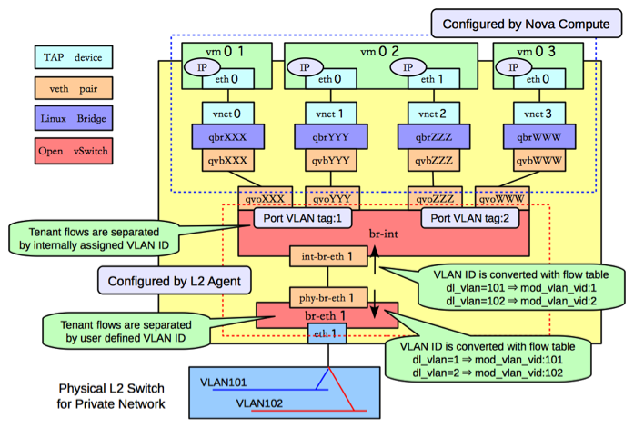

OpenStack 的 Neutron 中会建立好多网卡设备。大体上这些网卡可以分为两类 tun 和 veth。

用ethtool可以得到网卡所用的驱动，从而得到网上设备是哪一类。
$ ethtool -i veth4NCTQ1
driver: veth
version: 1.0
firmware-version:
bus-info:
supports-statistics: yes
supports-test: no
supports-eeprom-access: no
supports-register-dump: no
supports-priv-flags: no
下面就这两种设备分别做一下介绍。
tun & tap
TUN与TAP是操作系统内核中的虚拟网络设备。不同于普通靠硬件网路板卡实现的设备，这些虚拟的网络设备全部用软件实现，并向运行于操作系统上的软件提供与硬件的网络设备完全相同的功能。
TAP 等同于一个以太网设备，它操作第二层数据包如以太网数据帧。TUN模拟了网络层设备，操作第三层数据包比如IP数据封包。
操作系统通过TUN/TAP设备向绑定该设备的用户空间的程序发送数据，反之，用户空间的程序也可以像操作硬件网络设备那样，通过TUN/TAP设备发送数据。在后种情况下，TUN/TAP设备向操作系统的网络栈投递（或“注入”）数据包，从而模拟从外部接受数据的过程。
tun/tap 驱动程序实现了虚拟网卡的功能，tun表示虚拟的是点对点设备，tap表示虚拟的是以太网设备，这两种设备针对网络包实施不同的封装。
利用tun/tap 驱动，可以将tcp/ip协议栈处理好的网络分包传给任何一个使用tun/tap驱动的进程，由进程重新处理后再发到物理链路中。
开源项目openvpn和Vtun都是利用tun/tap驱动实现的隧道封装
虽然是出自一个娘，但它们仍然有大的不同。tun是点对点的设备，而tap是一个普通的以太网卡设备。也就是说，tun设备其实完全不需要有物理地址的。它收到和发出的包不需要arp，也不需要有数据链路层的头。而tap设备则是有完整的物理地址和完整的以太网帧。
可以通过以下方法创建
ip tuntap add mode tap
ip tuntap add mode tun
在 OpenStack 中，主要用tap来做虚拟机的网卡。
veth
veth 从名字上来看是 Virtual ETHernet 的缩写，它的作用很简单，就是要把从一个 network namespace 发出的数据包转发到另一个 namespace。veth 设备是成对的，一个是 container 之中，另一个在 container 之外，即在真实机器上能看到的。 建立 veth 类型的设备可以用下面的命令：
ip link add name veth0 type veth0 peer name veth1
这里建立了一对veth设备，名字分别是 veth0 和 veth1。当向其中一个设备写入数据时，另一个设备就能拿到写入的数据。在 OpenStack 中的使用就是来穿透 namespace.
Comments